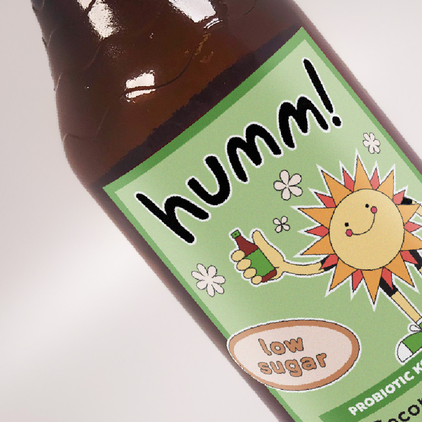
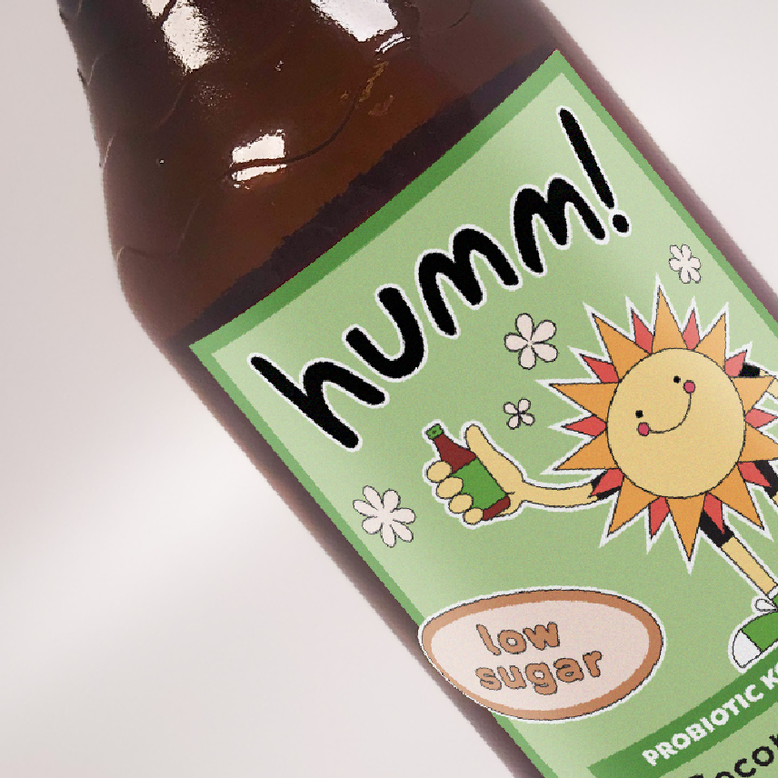
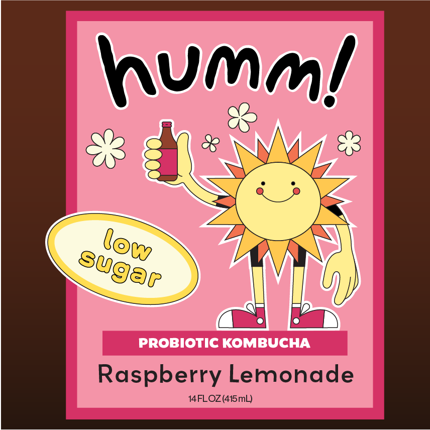
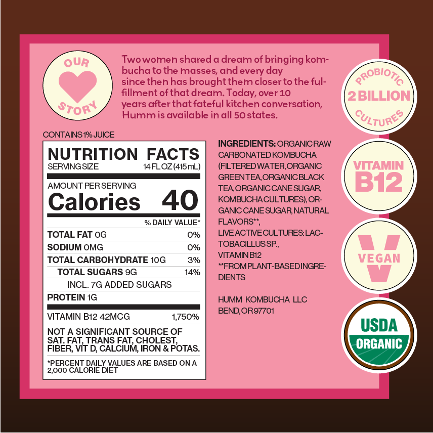
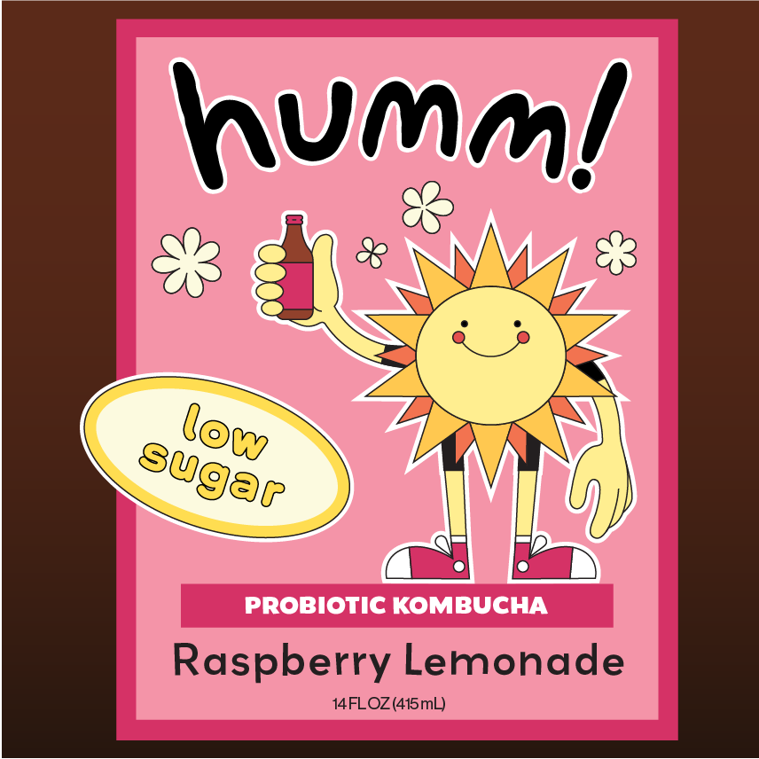
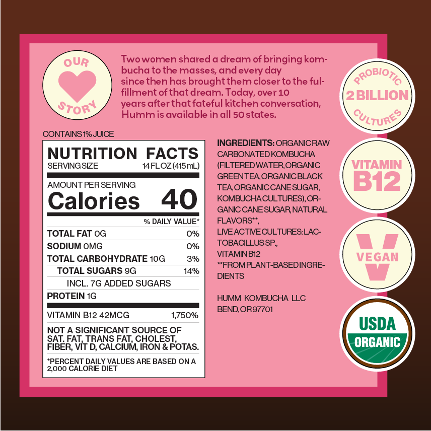

Humm Kombucha
I'm excited to share my label redesign project for Humm, a kombucha brand that started in Bend, Oregon. Humm's mission is to make a delicious and healthy kombucha that everyone can enjoy, and that you can find it at your local grocery stores. This concept project allowed me to explore branding, illustration, package design, and the world of creating food labels.
Problem and Solution
Humm's original label consisted of illustration, typography, and photography. In my redesign, I narrowed these elements down to the illustration. I chose a sun illustration they had used on some of their bottles and turned it into a character that could later be used as a mascot in their branding. I kept the color schemes relatively the same, opting for bright and fun colors to make the product seem more like a fun and healthy alternative to soda.
My Process
I started by creating a mood board and doing some brand reasearch. From there, I moved on to doing some basic thumbnail sketches to get my ideas on paper. After a thorough critique from my peers, I narrowed my sketches down and tried out some different color schemes. After more feedback, I worked on my digital compositions, creating my final label.

 

 


